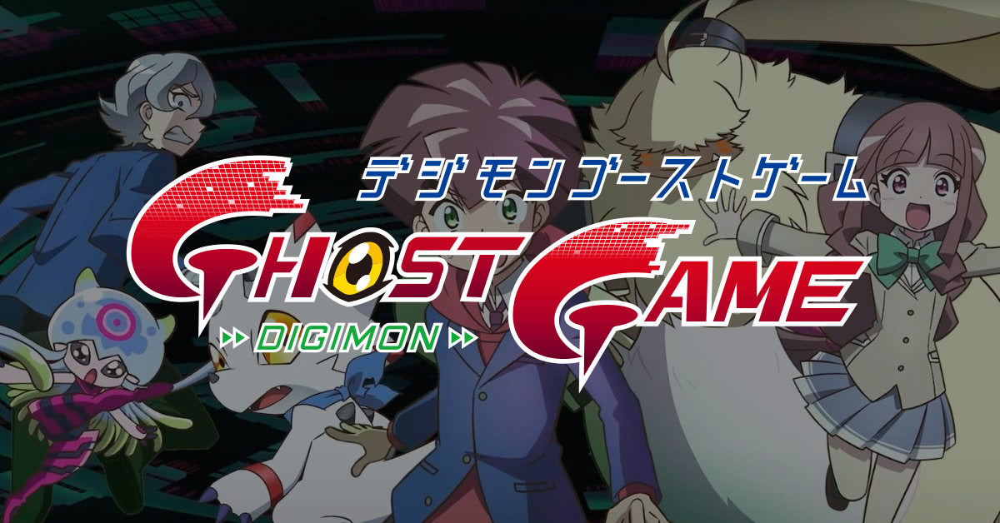
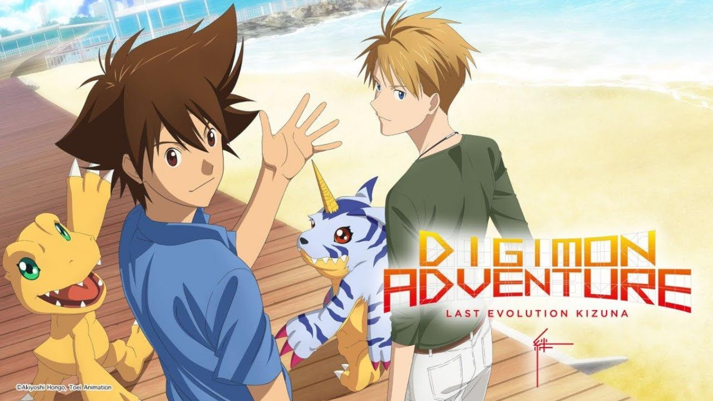
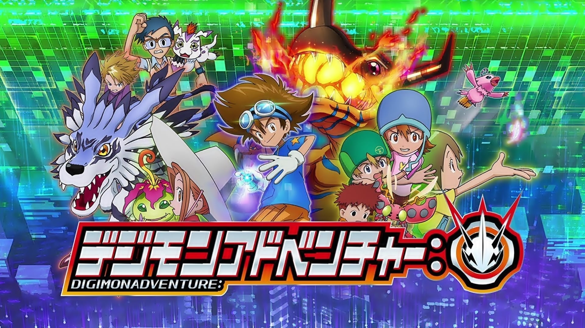
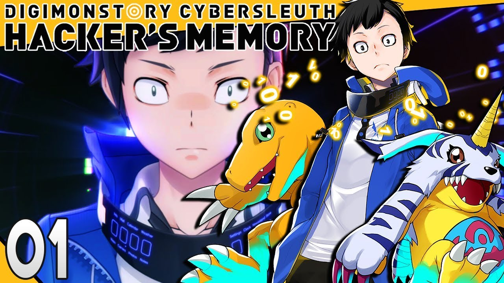
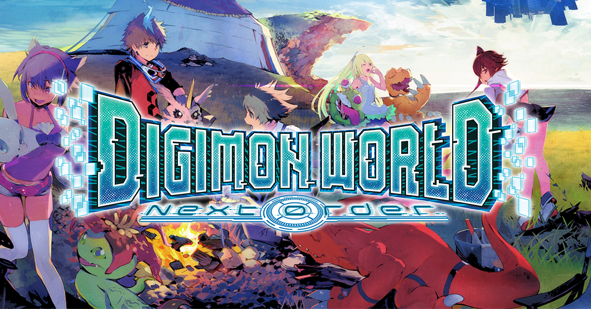

| ANIMES |
|  |
Digimon Ghost Game (Japanese: デジモンゴーストゲーム, Hepburn: Dejimon Gosuto Gemu) is a Japanese anime television series and the ninth anime series in the Digimon franchise. The series premiered on Fuji TV on October 3, 2021
|
|  |
Digimon Adventure: Last Evolution – Kizuna (Japanese: デジモンアドベンチャー Last Evolution 絆, Hepburn: Dejimon Adobencha Last Evolution Kizuna) is a 2020 Japanese anime adventure film produced by Toei Animation and animated by Yumeta Company.The film was released in Japanese theaters on February 21, 2020.Set in the same continuity of the first two Digimon television anime series, the film serves as the series finale of the original Digimon Adventure story. |
|  |
Digimon Adventure (Japanese: デジモンアドベンチャー:, Hepburn: Dejimon AdobenchA, stylized as Digimon Adventure:) is a Japanese anime television series. It is the eighth anime series in the Digimon franchise and a reboot of the original 1999 anime television series of the same name. The series premiered on Fuji TV in April 2020. |
| GAMES |
 |
Digimon Survive is an upcoming visual novel video game with survival strategy role-playing elements developed by Hyde and published by Bandai Namco Entertainment for the PlayStation 4, Xbox One, Nintendo Switch, and Microsoft Windows in 2022. It will release in Japan on July 28 and worldwide on July 29. |
|  |
Digimon Story: Cyber Sleuth - Hacker's Memory (デジモンストーリー サイバースルゥース ハッカーズメモリー Dejimon Sutori: Saiba Surwusu - Hakkazu Memori) is a role-playing video game developed by Media.Vision and published by Bandai Namco Entertainment released at December 14, 2017 in Japan for the PlayStation Vita, Playstation TV Vita, and PlayStation 4. |
|  |
Digimon World: Next Order[a] (stylized as DIGIMON WORLD -next 0rder-) is a role-playing video game in the Digimon franchise and the sixth game in the Digimon World series. The game is developed by B.B. Studio and published by Bandai Namco Entertainment. The game was released for PlayStation Vita in Japan on March 17, 2016. The game would later release on PlayStation 4 in North America and PAL regions in January 2017, and in Japan on February 26, 2017 as Digimon World: Next Order International Edition. |